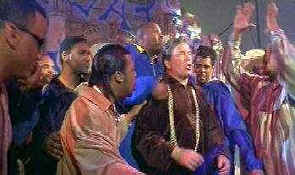

|
Free
Enterprise(SE)/B+,A- |
|
Pioneer/1999/114m/WS1.85 |
The
concept is scary, but the execution, infused with all the spirit
of true Star Trek fanatics, exudes with honest energy.
Free Enterprise so entertaining because it is much more
than a concept movie, it’s a film about people, and these
people are a lot of fun to be around. So fasten your seat belts
kiddies, cause the movie references will be flying like a meteor
shower.
|

|
|
The wrap
party. ©Pioneer |
Two buddies on the periphery of the movie business, one a
marginal magazine publisher and the other a talented film editor
in a less than prestige house, find inspiration in the common
bond of Star Trek idolatry. A chance meeting with William
Shatner, who is nothing like his Star Trek persona might
suggest, opens up new possibilities, Free Enterprise
takes off like a mission the crew of the original starship
Enterprise would be proud of, seeking new frontiers of
moviemaking and bringing a whole new beat to Shakespeare by way
of Shatner.
Boy, these guys
did a fine job of casting this film. Rafer Weigel is delightful
as Robert. Totally natural in every scene and filled with the
starry-eyed honesty of Star Trek innocence, Weigel gives Robert
a center of gravity good enough to make maneuvers in this spacey
comedy utterly comfortable. Eric McCormack does fine work as
Mark. Shatner is such a good sport about the material in Free
Enterprise. He’s comfortable with his character and
generous to his fellow actors.
What a terrific
special edition the Free Enterprise team has put
together. The audio commentary is enthusiastic and consistently
entertaining. In addition, the filmmakers have delivered a
documentary made with what appears to be a digital camcorder. It
looks great and is put together with the same verve as the
feature film. Get ready for some terrific screen tests and about
a half hour’s worth of deleted scenes. Bright DVD images with
plenty of visual pizzazz are more the norm these days. Free
Enterprise, a widescreen presentation, is no exception. The
colors are lively and literally jump off the screen. Edge
enhancement is kept to a minimum, yet detail is outstanding. You
can enjoy every quirky look delivered by the actors. Shatner’s
rap rendition of Julius Caesar is a blast and the sound is
crisp, clean, and while lacking the rumble of a Star Trek
flick, it has enough power to launch Free Enterprise.
|
|
The
Feature
Archive has articles ranging from John
Ford to Blonde
Bimbos, The
Heistmasters, Akira
Kurosawa and Frank
Darabont.

Click on the image above to learn more about the
effect of an actor's voice on his screen
persona.
Check out the Movie
Poster Archive for short bios and
images of Susan Hayward, Kirk Douglas, Katharine
Hepburn and many more. This month's featured star
is Clark
Gable. |
|
Imaging
Science Foundation
The Imaging Science Foundation
promotes proper standards in home theater viewing.
ISF trained technicians offer monitor calibration
services to consumers. The difference in a
properly calibrated monitor can be astounding. Click
on the image to find an ISF member near you. |
|
HOT
LINKS
DVD
Verdict
They
may be judgmental, but that's the point, isn't it.
Lots of DVD reviews plus news and more
The
Home Theater Forum
Looking
for lively and helpful exchanges on home theater,
DVD, movies. Visit this friendly site and get a
hardy welcome. |
|
Home Theater Reference
Reviewing System
When you read a DVD review it's of utmost importance to
know what equipment is being used to evaluate quality.
Click on the projectors to find out more. |
|